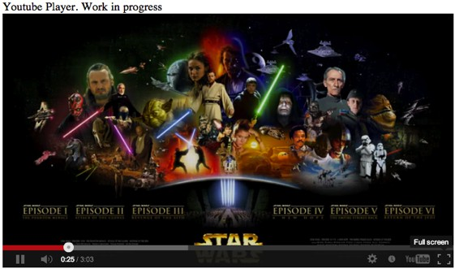

{% include JB/setup %}

<div class="container-fluid">
    <div class="row-fluid">
        <div class="span8">
            <a href="http://www.foodwall.me" target="_blank"></a>
        </div>

        <div class="span4">
            <br>
            <h4>Foodwall</h4>
            <br>
            <p>Foodwall was inspired by HealthyOut, Pinterest, and Fooducate with the goal
                of creating a web based application for locating nearby food with filters
                (such as lactose free, vegetarian), lots of photos, and detailed 
                nutritional data.</p>
        </div>
    </div>

    <hr>

    <div class="row-fluid">
        <div class="span4">
            <br>
            <h4>Youtube Player</h4>
            <br>
            <p>Pandora for YouTube...</p>
            <br>
        </div>

        <div class="span8">
            <a href="/youtube.html" target="_blank"></a>
        </div>
    </div>
